In this article, we will be discussing Laplace transforms and how they are used to solve differential equations. They also provide a method to form a transfer function for an input-output system, but this shall not be discussed here. They provide the basic building blocks for control engineering, using block diagrams, etc. Many kinds of transformations already exist but Laplace transforms and Fourier transforms are the most well known. The Laplace transforms is usually used to simplify a differential equation into a simple and solvable algebra problem. Even when the algebra becomes a little complex, it is still easier to solve than solving a differential equation.
An interesting analogy that may help in understanding Laplace is this. Imagine you come across an English poem which you do not understand. However, you have a Spanish friend who is excellent at making sense of these poems. So you translate this poem to Spanish and send it to him, he then in turn explains this poem in Spanish and sends it back to you. You understand the Spanish explanation and are then able to transfer the meaning of the poem back to English and thus understand the English poem.
Where are Laplace Transforms used in Real Life?
The Laplace Transform is derived from Lerch’s Cancellation Law. In the Laplace Transform method, the function in the time domain is transformed to a Laplace function in the frequency domain. This Laplace function will be in the form of an algebraic equation and it can be solved easily. The solution can be again transformed back to the time domain by using an Inverse Laplace Transform.
This transform is most commonly used for control systems, as briefly mentioned above. The transforms are used to study and analyze systems such as ventilation, heating and air conditions, etc. These systems are used in every single modern day construction and building.
Laplace transforms are also important for process controls. It aids in variable analysis which when altered produce the required results. An example of this can be found in experiments to do with heat.
Apart from these two examples, Laplace transforms are used in a lot of engineering applications and is a very useful method. It is useful in both electronic and mechanical engineering.
The control action for a dynamic control system whether electrical, mechanical, thermal, hydraulic, etc. can be represented by a differential equation. The system differential equation is derived according to physical laws governing is a system. In order to facilitate the solution of a differential equation describing a control system, the equation is transformed into an algebraic form. This transformation is done with the help of the Laplace transformation technique, that is the time domain differential equation is converted into a frequency domain algebraic equation.
Definition of Laplace Transform
Let f(t) be the function of t, time for all t ≥ 0
Then the Laplace transform of f(t), F(s) can be defined as
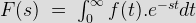
Provided that the integral exists. Where the Laplace Operator, s = σ+jω; will be real or complex j= √(-1)
Disadvantages of the Laplace Transformation Method
Laplace transforms can only be used to solve complex differential equations and like all great methods, it does have a disadvantage, which may not seem so big. That is, you can only use this method to solve differential equations WITH known constants. If you do have an equation without the known constants, then this method is useless and you will have to find another method.
History of Laplace Transforms
Transformation in mathematics deals with the conversion of one function to another function that may not be in the same domain. The transform method finds its application in those problems which can’t be solved directly. This transform is named after the mathematician and renowned astronomer Pierre Simon Laplace who lived in France.
He used a similar transform on his additions to the probability theory. It became popular after World War Two. This transform was made popular by Oliver Heaviside, an English Electrical Engineer. Other famous scientists such as Niels Abel, Mathias Lerch, and Thomas Bromwich used it in the 19th century.
The complete history of the Laplace Transforms can be tracked a little more to the past, more specifically 1744. This is when another great mathematician called Leonhard Euler was researching on other types of integrals. Euler however did not pursue it very far and left it. An admirer of Euler called Joseph Lagrange; made some modifications to Euler’s work and did further work.
LaGrange’s work got Laplace’s attention 38 years later, in 1782 where he continued to pick up where Euler left off. But it was not 3 years later; in 1785 where Laplace had a stroke of genius and changed the way we solve differential equations forever. He continued to work on it and continued to unlock the true power of the Laplace transform until 1809, where he started to use infinity as a integral condition.
Method of Laplace Transforms
The Laplace transformation is an important part of control system engineering. To study or analyze a control system, we have to carry out the Laplace transform of the different functions (function of time). Inverse Laplace is also an essential tool in finding out the function f(t) from its Laplace form. Both inverse Laplace and Laplace transforms have certain properties in analyzing dynamic control systems. Laplace transforms have several properties for linear systems. The different properties are:
Linearity , Differentiation , integration, multiplication, frequency shifting, time scaling, time shifting, convolution, conjugation, periodic function. There are two very important theorems associated with control systems. These are :
i) Initial value theorem (IVT) –
ii) Final value theorem (FVT) –
The Laplace transform is performed on a number of functions, which are – impulse, unit impulse, step, unit step, shifted unit step, ramp, exponential decay, sine, cosine, hyperbolic sine , hyperbolic cosine, natural logarithm , Bessel function. But the greatest advantage of applying the Laplace transform is solving higher order differential equations easily by converting into algebraic equations.
There are certain steps which need to be followed in order to do a Laplace transform of a time function. In order to transform a given function of time f(t) into its corresponding Laplace transform, we have to follow the following steps:
• First multiply f(t) by e-st, s being a complex number (s = σ + j ω).
• Integrate this product w.r.t time with limits as zero and infinity. This integration results in Laplace transformation of f(t), which is denoted by F(s).
The mathematical expression for Laplace transform is written as,
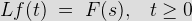
\; = \;\int_0^\infty f(t). e^{-st}dt")
The time function f(t ) is obtained back from the Laplace transform by a process called inverse Laplace transformation and denoted by L-1
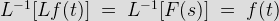
Properties of Laplace Transform
The main properties of Laplace Transform can be summarized as follows:
Linearity: Let C1, C2 be constants. f(t),g(t) be the functions of time, t, then

First shifting Theorem:
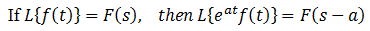
Change of scale property:
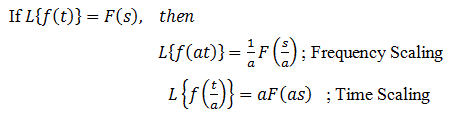
Differentiation:
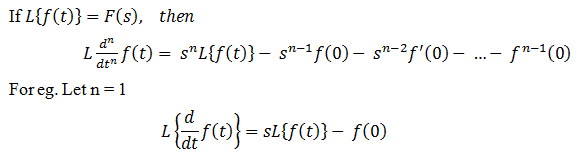
Integration:
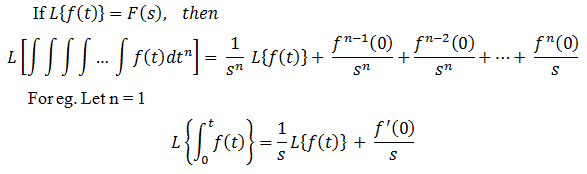
Time Shifting:
If L{f(t) }=F(s), then the Laplace Transform of f(t) after the delay of time, T is equal to the product of Laplace Transform of f(t) and e-st that is
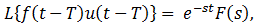
Where u(t-T) denotes unit step function.
Product:
If L{f(t) }=F(s), then the product of two functions, f1 (t) and f2 (t) is
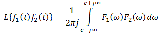
Final Value Theorem:
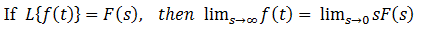
This theorem is applicable in the analysis and design of feedback control system, as Laplace Transform gives solution at initial conditions
Initial Value Theorem:
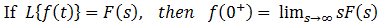
There is always a table that is available to the engineer that contains information on the Laplace transforms. An example table has been made below. We will come to know about the Laplace transform of various common functions from the following table .
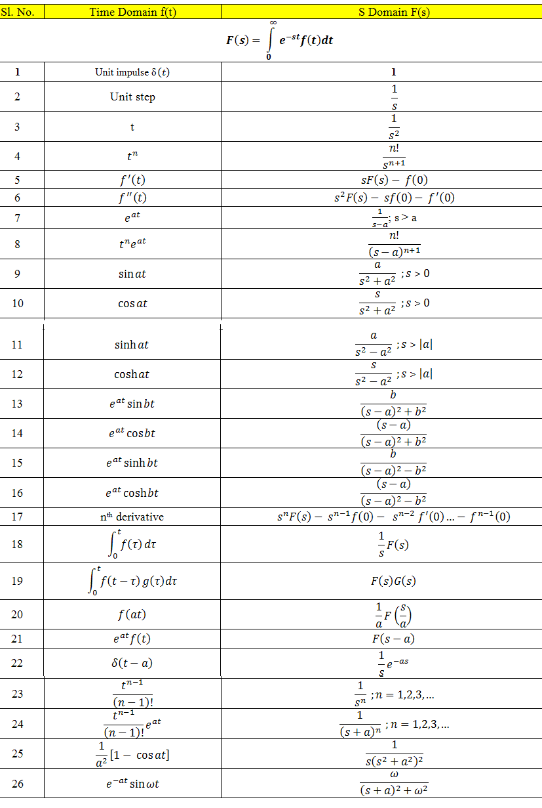
Explanation and Examples
There is a lot of math involved in proving Laplace transforms, most engineering students will not have to know those but what they will have to know, however, is how to solve them. An explanation on how to do so will be in this section.
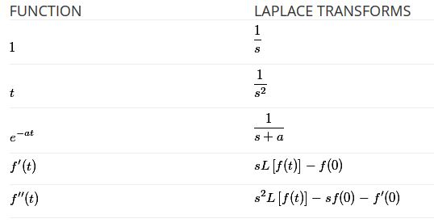
Example of Laplace Transformation
Solve the equation using Laplace Transforms,
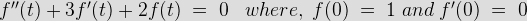
Using the table above, the equation can be converted into Laplace form:
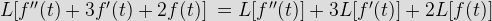
Using the data that has been given in the question the Laplace form can be simplified.
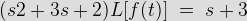
Dividing by (s2 + 3s + 2) gives
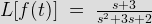
This can be solved using partial fractions, which is easier than solving it in its previous form. Firstly, the denominator needs to be factorized.
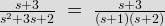
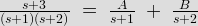
Cross-multiplying gives:
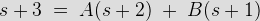
Next the coefficients A and B need to be found
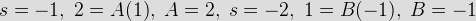
Substituting in the equation:
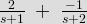
Then using the table that was provided above, that equation can be converted back into normal form.
This is pretty much it for Laplace Transforms, it is not too difficult but if you have any problems or suggestions please leave it in the comments below or get in touch with me.
Examples to try yourself
Calculate and write out the inverse Laplace transformation of the following, it is recommended to find a table with the Laplace conversions online:
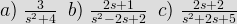
Answers:
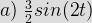
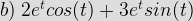
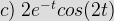
 by
by